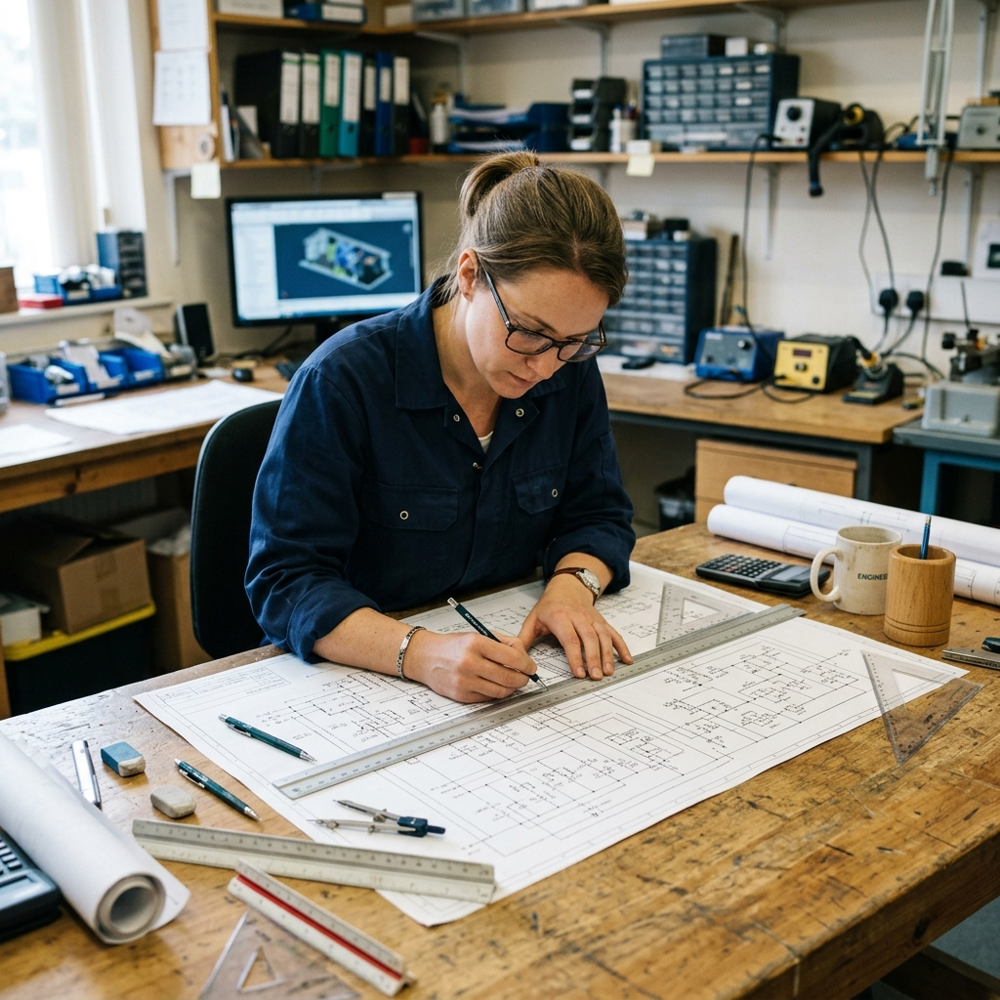
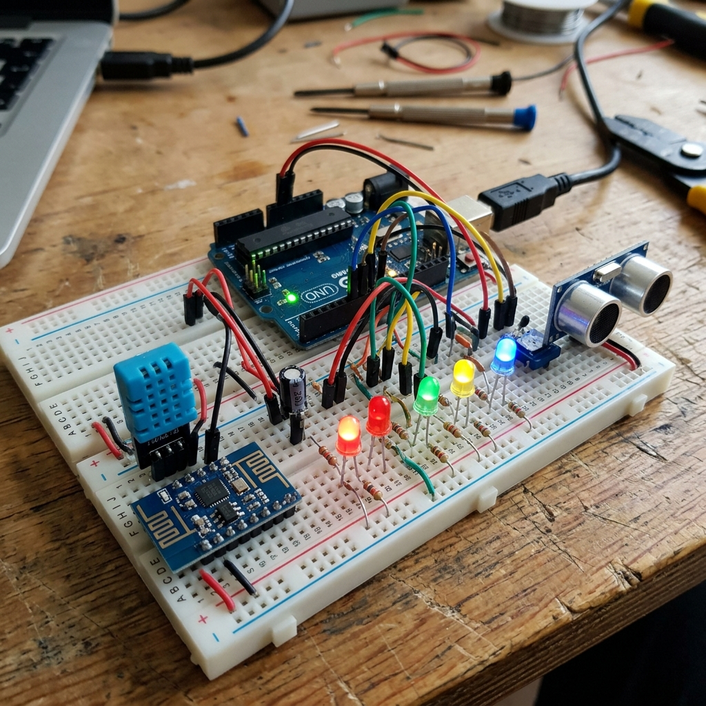

ความหมายและความสำคัญ
กระบวนการออกแบบเชิงวิศวกรรม (Engineering Design Process: EDP) เป็นขั้นตอนการแก้ปัญหาหรือพัฒนางานอย่างเป็นระบบ เพื่อตอบสนองความต้องการของมนุษย์ โดยอาศัยการบูรณาการความรู้ทางวิทยาศาสตร์ คณิตศาสตร์ เทคโนโลยี และศาสตร์อื่น ๆ มาหาทางเลือกที่เหมาะสมที่สุดในการสร้างชิ้นงานหรือวิธีการ
จุดเด่นของกระบวนการเชิงวิศวกรรม
คือการทำงานที่เป็นระบบและสามารถย้อนกลับ (Iterative) ไปแก้ไขหรือปรับปรุงในขั้นตอนก่อนหน้าได้ตลอดเวลา เมื่อพบข้อจำกัดหรือปัญหาในการออกแบบหรือทดสอบชิ้นงาน

กระบวนการออกแบบเชิงวิศวกรรม 6 ขั้นตอน
ตามมาตรฐานหลักสูตรวิทยาศาสตร์และเทคโนโลยี (สสวท./อจท.) กระบวนการแก้ปัญหาอย่างเป็นระบบแบ่งออกเป็น 6 ขั้นตอนหลัก ดังนี้:
ขั้นระบุปัญหา (Problem Identification)
ทำความเข้าใจสถานการณ์ ปัญหา หรือความต้องการให้ชัดเจน โดยใช้เครื่องมือตั้งคำถาม 5W1H (Who, What, Why, When, Where, How) เพื่อวิเคราะห์ขอบเขตและเป้าหมายในการแก้ปัญหา
ขั้นรวบรวมข้อมูลและแนวคิดที่เกี่ยวข้องกับปัญหา (Related Information Search)
สืบค้นและรวบรวมข้อมูล ทฤษฎี หรือแนวคิดที่เกี่ยวข้อง เช่น จากหนังสือ อินเทอร์เน็ต สอบถามผู้รู้ หรือระดมสมอง เพื่อหาแนวทางการแก้ปัญหาที่เป็นไปได้หลาย ๆ วิธี
ขั้นออกแบบวิธีการแก้ปัญหา (Design)
นำข้อมูลที่รวบรวมได้มาวิเคราะห์ เปรียบเทียบข้อดีข้อเสีย และตัดสินใจเลือกแนวคิดที่ดีที่สุด จากนั้นถ่ายทอดความคิดออกเป็นภาพร่าง 2 มิติ/3 มิติ หรือผังงาน (Flowchart) เพื่อระบุรายละเอียดของชิ้นงานหรือวิธีการ
ขั้นวางแผนและดำเนินการแก้ปัญหา (Planning and Development)
กำหนดตารางเวลาและขั้นตอนการดำเนินงานโดยละเอียด (เช่น การทำ Gantt Chart) กำหนดผู้รับผิดชอบ และลงมือจัดเตรียมวัสดุเครื่องมือเพื่อสร้างแบบจำลองหรือชิ้นงานต้นแบบ (Prototype)
ขั้นทดสอบ ประเมินผล และปรับปรุงแก้ไข (Testing, Evaluation and Refinement)
กำหนดเกณฑ์ทดสอบชิ้นงานต้นแบบในสถานการณ์จำลองหรือจริง บันทึกผลการทดสอบ วิเคราะห์ข้อบกพร่องที่เกิดขึ้น แล้วดำเนินการแก้ไขปรับปรุงชิ้นงานให้มีประสิทธิภาพสูงสุดตามเกณฑ์
ขั้นนำเสนอวิธีการแก้ปัญหา ผลการแก้ปัญหาหรือชิ้นงาน (Presentation)
นำเสนอผลลัพธ์ตั้งแต่ขั้นวิเคราะห์ปัญหา แนวคิด การออกแบบ การทำงานของชิ้นงาน และข้อเสนอแนะในการพัฒนาต่อยอด ผ่านสื่อต่าง ๆ เช่น แผ่นพับ บอร์ดนิทรรศการ หรือไฟล์นำเสนอ ให้ผู้อื่นเข้าใจอย่างสร้างสรรค์
กรณีศึกษาตัวอย่าง: การประยุกต์ใช้ 6 ขั้นตอน
เพื่อความเข้าใจที่ชัดเจน ให้นักเรียนร่วมศึกษากระบวนการผ่านตัวอย่างโครงการ "การออกแบบถังขยะอัจฉริยะลดสัมผัสเพื่อสุขอนามัยในโรงเรียน":
นักเรียนในโรงเรียนต้องใช้มือสัมผัสฝาถังขยะในการทิ้งเศษอาหาร ทำให้เสี่ยงต่อการแพร่เชื้อโรค (แก้ปัญหาที่ "โรงเรียน", เพื่อ "สุขอนามัย")
ศึกษาเซนเซอร์ตรวจจับระยะทาง (Ultrasonic Sensor), การทำงานของบอร์ดควบคุม Micro:bit หรือ Arduino และระบบเปิดปิดฝาถังด้วยมอเตอร์เซอร์โว
วาดภาพร่าง 3 มิติของถังขยะ โดยวางตำแหน่งเซนเซอร์ไว้ด้านหน้าฝา และมอเตอร์เชื่อมกับข้อต่อฝาเพื่อเปิดปิดเมื่อมีวัตถุเข้ามาใกล้ระยะ 15 ซม.
ทำตารางจัดซื้อของ 3 วัน เขียนโปรแกรมควบคุมและประกอบตัวถังขยะจำลองจากแผ่นพลาสติกลูกฟูก (ฟิวเจอร์บอร์ด) และบอร์ดไมโครคอนโทรลเลอร์
ทดลองนำขยะไปทิ้ง 20 ครั้ง พบว่าฝาเปิดอัตโนมัติได้ดี แต่มีบางครั้งฝาปิดเร็วเกินไป จึงปรับปรุงเวลาหน่วงในโปรแกรมเพิ่มจาก 3 วินาที เป็น 5 วินาที
จัดทำบอร์ดสรุปและวิดีโอสาธิตการใช้งานจริง เผยแพร่ในกลุ่มเฟซบุ๊กวิชาเรียน และสาธิตให้ครูอนามัยทดลองใช้
